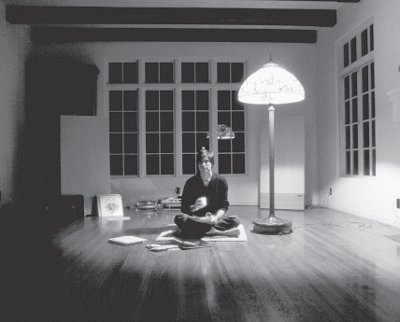

Bir Diana Walker Fotoğrafları Portfolyosu Fotoğrafçı Diana Walker, arkadaşı Steve Jobs’ın neredeyse otuz
yıl boyunca fotoğraflarını çekme imkânını buldu.
İşte portfolyosundan bir seçki.

Cupertino’daki evinde,
1982: Öyle mükemmeliyetçiydi ki, eve eşya almakta zorlanıyordu.